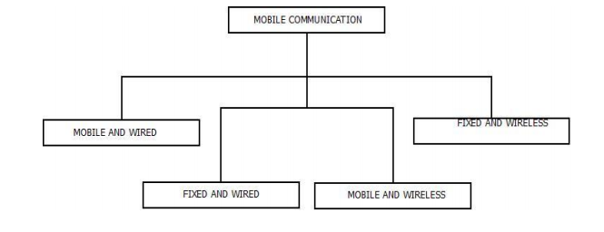
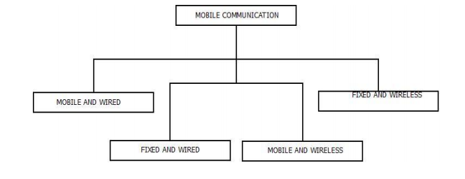
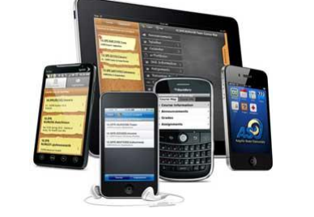

Links
Click here to go to page1.html
Click here to go to page2.html
Click here to go to page3.html
Mobile Computing
What is a Mobile Computing
o Educational servicesMobile Computing is a technology that allows transmission of data, voice and video
via a computer or any other wireless enabled device without having to be connected
to a fixed physical link. The main concept involves :
1- Mobile communication
2- Mobile hardware
3- Mobile software o Educational services
Mobile communication
The mobile communication in this case, refers to the infrastructure put in place
to ensure that seamless and reliable communication goes on. These would include
devices such as protocols, services, bandwidth, and portals necessary to facilitate and
support the stated services. The data format is also defined at this stage. This ensures
that there is no collision with other existing systems which offer the same service.
 Since the media is unguided/unbounded, the overlaying infrastructure is basically
radio wave-oriented. That is, the signals are carried over the air to intended devices
that are capable of receiving and sending similar kinds of signals.
Mobile Communication is the framework that is responsible behind the
working of mobile computing technology.
It ensures the consistency and reliability of communication process through
this framework.
Mobile communication framework includes communication devise such as
mobiles, laptops, as rules of conduct, fitness etc. They are responsible for
delivering of smooth communication process.
Mobile communication can be of one of the following form as mentioned
below.

1. Mobile and Wired : In this configuration, Some of the devices are wired and
some are mobile in nature. For Example : Laptops.
2. Fixed and Wired : In this configuration, The devices are fixed at a position
and are connected through a physical link for communication. For
Example : Office/Desktop Computer.
3. Mobile and Wireless : In this configuration, devices can communicate(data
transmission) with each other irrespective of their position and can connect to
any network without the use of any wired device. For Example : WiFi Dongle.
Since the media is unguided/unbounded, the overlaying infrastructure is basically
radio wave-oriented. That is, the signals are carried over the air to intended devices
that are capable of receiving and sending similar kinds of signals.
Mobile Communication is the framework that is responsible behind the
working of mobile computing technology.
It ensures the consistency and reliability of communication process through
this framework.
Mobile communication framework includes communication devise such as
mobiles, laptops, as rules of conduct, fitness etc. They are responsible for
delivering of smooth communication process.
Mobile communication can be of one of the following form as mentioned
below.

1. Mobile and Wired : In this configuration, Some of the devices are wired and
some are mobile in nature. For Example : Laptops.
2. Fixed and Wired : In this configuration, The devices are fixed at a position
and are connected through a physical link for communication. For
Example : Office/Desktop Computer.
3. Mobile and Wireless : In this configuration, devices can communicate(data
transmission) with each other irrespective of their position and can connect to
any network without the use of any wired device. For Example : WiFi Dongle.
Mobile Hardware
Mobile hardware includes mobile devices or device components that receive or
access the service of mobility. They would range from portable laptops,
smartphones, tablet Pc's, Personal Digital Assistants.
These devices will have a receptor medium that is capable of sensing and receiving
signals. These devices are configured to operate in full- duplex, whereby they are
capable of sending and receiving signals at the same time. They don't have to wait
until one device has finished communicating for the other device to initiate
communications.
Above mentioned devices use an existing and established network to operate on. In
most cases, it would be a wireless network .
Mobile software
Mobile software is the actual program that runs on the mobile hardware. It deals
with the characteristics and requirements of mobile applications. This is the engine
of the mobile device. In other terms, it is the operating system of the appliance. It's
the essential component that operates the mobile device.
Since portability is the main factor, this type of computing ensures that users are not
tied or pinned to a single physical location, but are able to operate from anywhere. It
incorporates all aspects of wireless communications.